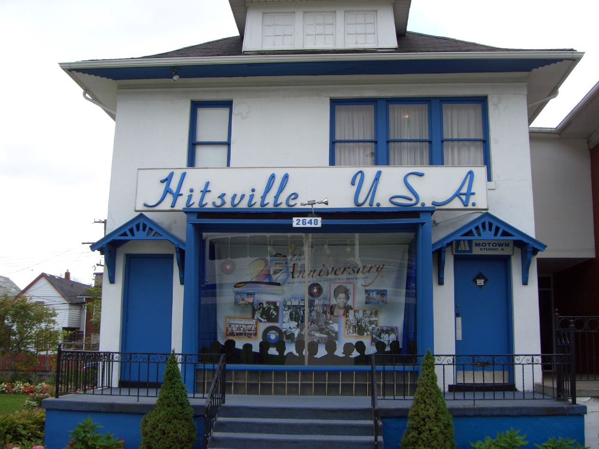
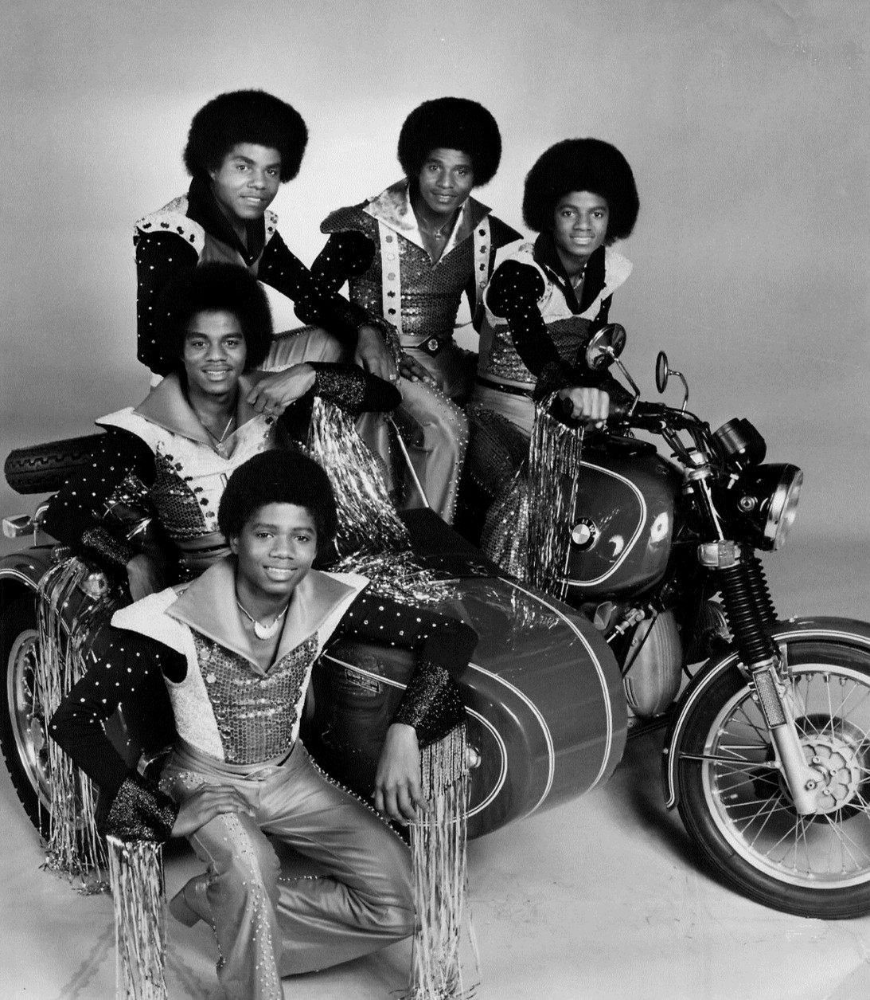

The original Jackson 5 group.
CBS Television, Public domain, via Wikimedia Commons
In the beginning, it was just the three eldest brothers, Jackie, Tito, and Jermaine, and their group was called the Jackson Brothers. Eventually, Michael and Marlon joined them, and Michael quickly became the lead singer. Their dad, Joe Jackson, was the one who helped to form their group and became their manager. He was a crane operator and was previously a professional guitarist. They performed a lot at talent shows in Gary and won a talent show in 1966 at a high school, which made them popular locally and led to them being noticed by people from Motown.
The Jackson 5 Sign with Motown

Motown’s original headquarters in Detroit, where the brothers carried out their audition in 1968.
Global Reactions, CC BY 2.0, via Wikimedia Commons
The Jackson 5 performed as the opening act for Bobby Taylor at a show in Chicago, and Taylor was impressed by Michael, so he took the group to Detroit for a Motown audition. Their audition was filmed and sent to L.A., where it was reviewed by Berry Gordy, who had initially rejected their tape because he didn’t want to take on any more kid acts, but the video changed his mind. On March 11, 1969, they signed a seven-year contract.
The Jackson 5 Leave Motown for Epic

The Jacksons in 1977, with Randy subbed in and Jermaine subbed out.
CBS Television, Public domain, via Wikimedia Commons
The group left Motown in 1975 due to a drop in sales and popularity and signed with Epic. Because Motown owned the title “Jackson 5,” the group had to change their name to The Jacksons. Jermaine was the only brother who stayed with Motown since he married Berry Gordy’s daughter, but the youngest brother, Randy, replaced him when they were at Epic.